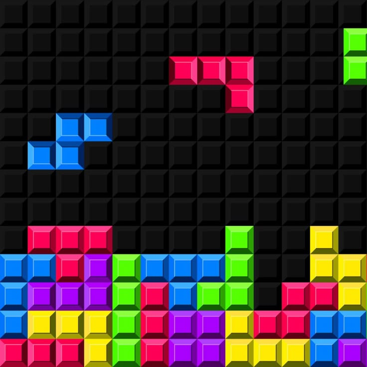
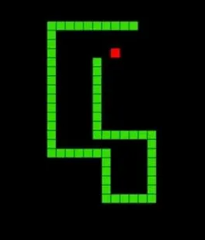
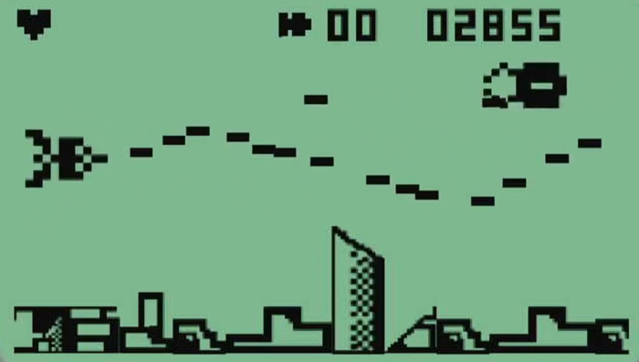
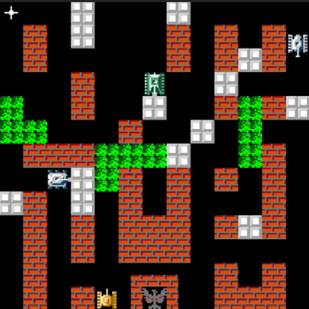
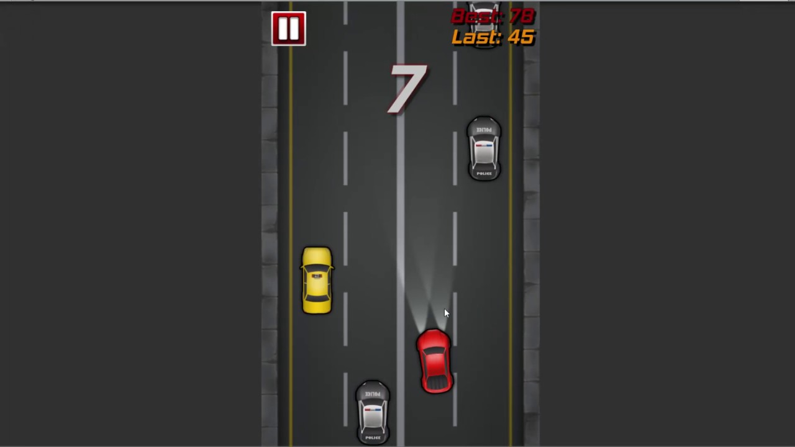

Легендарная коллекция Ретро-Игр
Нажмите на любую карточку ниже, чтобы загрузить игру в эмулятор

Тетрис (1984)
Культовая головоломка. Сортируйте падающие блоки, очищайте стакан и не допускайте переполнения линий.

Змейка (1997)
Легенда телефонов Nokia. Собирайте еду, растите в длину, но берегите свой собственный хвост и стены.

Space Impact (2000)
Космический скролл-шутер. Уничтожайте волны астероидов, уклоняйтесь от угроз и сбивайте секретные метеориты.

Танчики (1985)
Легендарный Battle City. Защищайте базу, уничтожайте танки противника и пробивайте кирпичные стены.

Pac-Man (1980)
Классика аркадных залов. Ешьте точки в лабиринте и уклоняйтесь от цветных привидений.

Ретро Гонки(2001)
Вид сверху, 3 полосы. Объезжайте машины, собирайте монеты и подбирайте канистры, чтобы не кончалось топливо.
READY?
GAME OVER
Счет: 0
Эволюция Гейминга
Представленные игры — это фундамент мировой индустрии развлечений. Pac-Man (1980) стал первой игрой, породившей массовую поп-культуру и мерч. Тетрис (1984) доказал, что идеальный геймплей не требует сложной графики, а мобильные хиты вроде Snake (1997) и Space Impact превратили обычные телефоны в первые портативные консоли для миллионов людей.
Как устроен этот портал?
Весь игровой движок написан на чистом JavaScript (Vanilla JS) без использования тяжелых сторонних библиотек (Pixi.js, Phaser) или веб-сборок WebAssembly. Графика рендерится в реальном времени через API HTML5 Canvas со стабильной частотой 60 кадров в секунду. Каждый игровой модуль изолирован, что исключает утечки памяти и конфликты при переключении.
Зал Славы Платформы
| Дисциплина | Абсолютный Рекорд | Геймер |
|---|---|---|
| TETRIS | 99,900 | [CYBER_PUNK] |
| SNAKE | 4,200 | [Nokia_User] |
| SPACE IMPACT | 15,500 | [NEO_STAR] |
| BATTLE CITY | 22,400 | [TANK_MAN] |
| PAC-MAN | 3,333,360 | [BILLY_M] |
| RETRO RACING | 8,900 | [TURBO_99] |
Секреты Профессионалов
- • В Танчиках: Никогда не бросайте базу ради бонуса. Сначала зажмите врага в тупике, а затем активируйте щит или супер-атаку.
- • В Гонках: Используйте ускорение (кнопка вверх) только на прямых участках, когда видите зеленую канистру, иначе пустой бак застанет вас врасплох.
- • В Пакмане: Не бегайте за привидениями хаотично. Изучите их логику: Красный всегда идет по пятам, а Оранжевый трусливо сворачивает в угол, если вы близко.
Скрытые Механики
В процессе воссоздания игр мы заложили несколько скрытых пасхалок. Например, в Space Impact фиолетовый метеорит-босс `[?]` имеет адаптивный ИИ: если у вас осталось последнее сердце, шанс выпадения лечащего бонуса увеличивается до 60%. А физика скольжения танка на льду в Танчиках в точности рассчитывает инерцию оригинальной Денди.
Аудио код 80-х
Музыкальное сопровождение ретро-игр строилось по строгим законам чиптюна. Старые консоли (NES, GameBoy) имели всего от 3 до 5 звуковых каналов: две пульсирующие волны для мелодии, одну треугольную для баса и один шумовой канал для взрывов. Композиторам приходилось проявлять гениальность, чтобы создавать шедевры в условиях килобайтных ограничений.
root@arcade:~$ ./init_portal_status.sh
> Загрузка модулей: Тетрис [OK] | Змейка [OK] | Космос [OK] | Танки [OK] | Пакман [OK] | Гонки [OK]
> База данных рекордов синхронизирована локально через LocalStorage.
root@arcade:~$ _
Предложить игру в следующий патч
Какую ретро-классику вы хотите увидеть на портале? Оставьте запрос бортовому компьютеру: